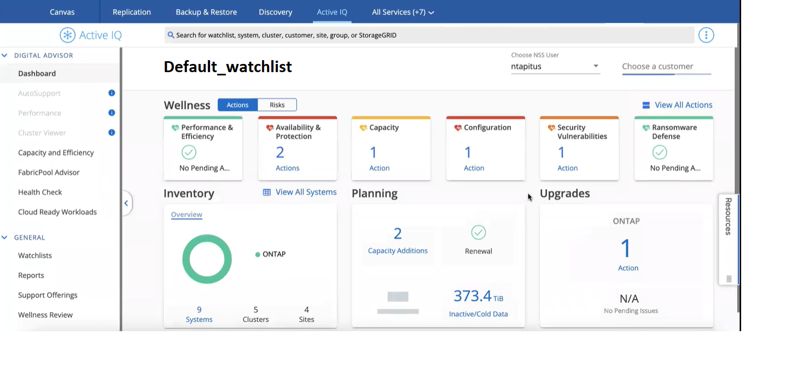

要求變更文件
要求變更文件 編輯此頁面
編輯此頁面 瞭解如何作出貢獻
瞭解如何作出貢獻
本繁體中文版使用機器翻譯，譯文僅供參考，若與英文版本牴觸，應以英文版本為準。
使用Active IQ 「NetApp數位顧問」最佳化叢集
"《數位顧問》 Active IQ" 整合至Cloud Manager UI、讓ONTAP 您在單一窗口中、將整個VMware叢集的作業、安全性和效能最佳化。
功能
您可以在報價表層級使用Active IQ 「更新數位顧問」、檢視儲存系統的整體狀態、系統健全狀況的高階資訊、庫存管理、規劃、升級、以及寶貴的見解。
-
分析並最佳化儲存系統的健全狀況
-
深入瞭解儲存系統的所有風險、以及降低風險的行動
-
檢視效能資料的圖形格式、以分析儲存設備的效能
-
取得超過90%容量或接近90%容量的系統詳細資料
-
取得未來6個月內已過期或即將到期的硬體與軟體相關資訊
-
升級您的儲存系統軟體、ONTAP 並使用Ansible更新您的韌體
支援ONTAP 的支援的支援系統
《支援資料》提供您在NSS.帳戶內所有內部部署的系統及支援資料。Active IQ ONTAP Cloud Volumes ONTAP
成本
透過 Cloud Manager 使用這項服務不需付費。
如何與Cloud Manager搭配運作Active IQ
這個功能完全整合在Cloud Manager中。Active IQ
在Cloud Manager中、按一下* Active IQ 《*》服務。
-
如果您已在Cloud Manager中註冊現有的NSS帳戶、Active IQ 就像您在的獨立實作中看到的一樣、畫面上會出現這個畫面 https://activeiq.netapp.com/。

-
如果您尚未在Cloud Manager中註冊某個NSS帳戶、 "立即註冊一個nssnss" 接著出現「畫面」畫面、顯示「畫面」Active IQ 。

|
截至2021年12月為止、NetApp已改用新的方法來登錄新的NSS-帳戶認證。 "如需詳細資料、請參閱此常見問題集"。如果您的NSS帳戶使用舊的一組認證資料、您將需要將帳戶更新為新的認證資料。 |
下一步
請參閱 "《數位顧問》文件 Active IQ" 以取得詳細資料。